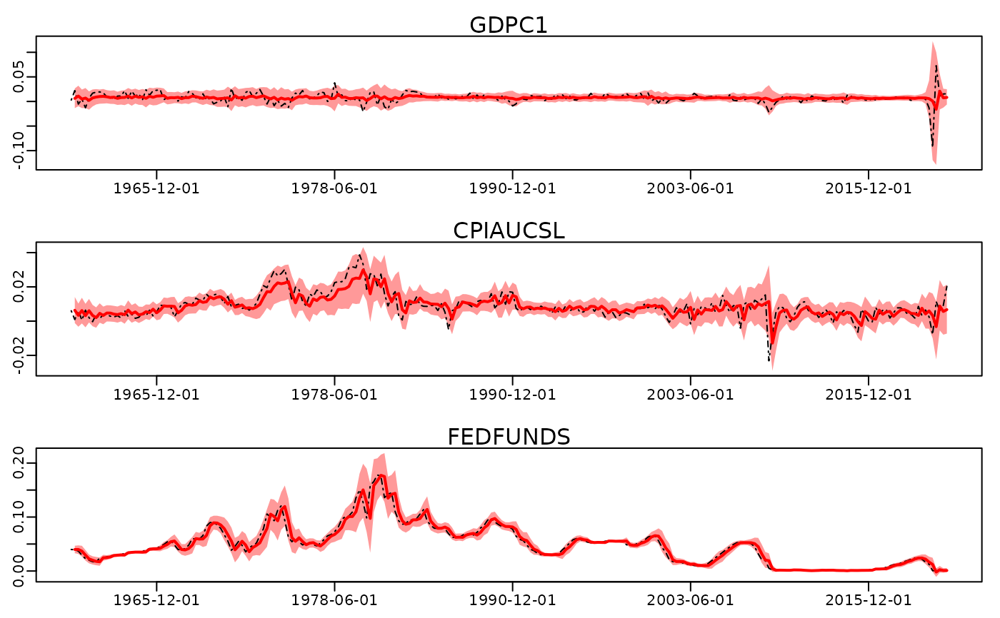

Visualization of in-sample fit of an estimated VAR.
Arguments
- x
A
bayesianVARs_fittedobject.- dates
optional vector of dates for labelling the x-axis. The default values is
NULL; in this case, the axis will be labeled with numbers.- vars
character vector containing the names of the variables to be visualized. The default is
"all"indicating that the fit of all variables is visualized.- quantiles
numeric vector indicating which quantiles to plot.
- n_col
integer indicating the number of columns to use for plotting.
- ...
Currently ignored.
See also
fitted method for class 'bayesianVARs_bvar':
fitted.bayesianVARs_bvar().Other plotting
plot.bayesianVARs_bvar(),plot.bayesianVARs_fitted(),plot.bayesianVARs_predict(),pairs.bayesianVARs_predict(),posterior_heatmap().
Examples
# Access a subset of the usmacro_growth dataset
data <- usmacro_growth[,c("GDPC1", "CPIAUCSL", "FEDFUNDS")]
# Estimate a model
mod <- bvar(data, sv_keep = "all", quiet = TRUE)
# Simulate predicted historical values including the error term.
pred <- fitted(mod, error_term = TRUE)
# Visualize
plot(pred)
